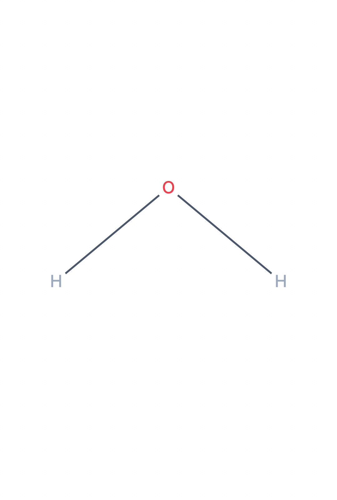
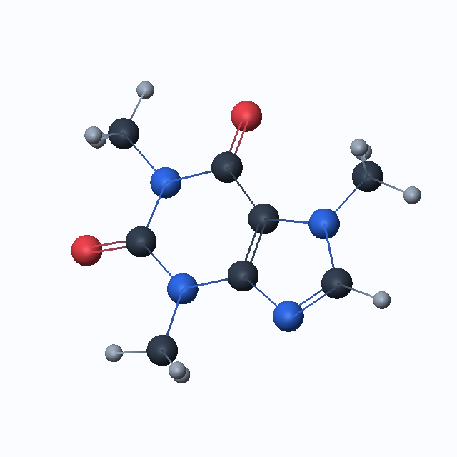
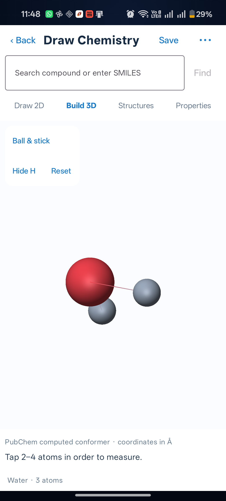
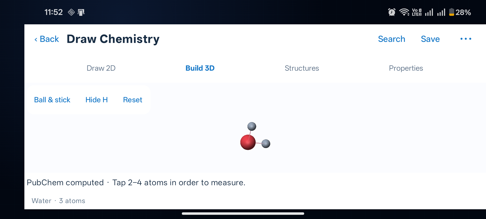
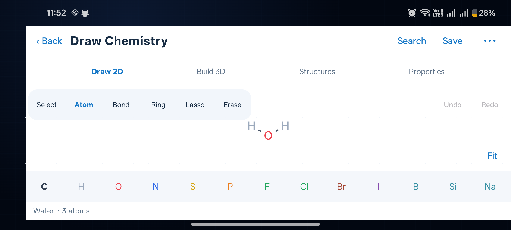

Draw Chemistry — implementation audit
18 October 2026 · Native Android module · Explicit capability and verification boundaries
Delivery status
A functional core editor and a home-screen card have been added. The complete 14-phase professional chemistry workstation specification is not complete. Unsupported advanced functions are documented rather than represented by fake controls or fabricated chemistry.
Source: app/src/main/java/com/indianservers/aichemistryexplorer/drawchemistry/ · Navigation: Screen.DrawChemistry in MainActivity.kt · Persistence: draw-chemistry.db (Room v1).
1 · Integration — Implemented
Independent drawchemistry package; home dashboard card; DrawChemistry navigation route; own Room database; existing modules preserved.
2 · UI — Portrait and landscape verified
Snow-white Compose controls; Draw 2D, Build 3D, Structures and Properties; canvas with floating tools; compact element strip. Unlocked-device UI tests and screenshots verify portrait and landscape layouts. The landscape search field is collapsible; drawing and 3D tool panels use compact horizontal rows. Restored drawings fit the resized canvas. Exhaustive small-screen and font-scale combinations remain untested.
3 · 2D editing — Core implemented; advanced features partial
All 118 elements; replacement, charge, isotope, hydrogen count, display aliases, mapping, single/double/triple, wedge/dash, dative/query annotations; atom/bond hit testing; bond geometry, rings 3–8, nine aromatic/heterocyclic templates; select, lasso, drag, erase, pan/zoom, undo/redo, fragment copy/paste. Arbitrary fusion/bridging, chemical R/query atoms, radicals, lone-pair semantics and general stereochemical re-assignment are not implemented. Unedited source stereochemistry survives tested molecular round trips; structural edits require stereo review.
4 · 3D — Reference-coordinate viewer implemented; builder incomplete
OpenGL ES 2 sphere impostors and bond rendering; ball/stick, space-filling, wireframe, licorice; rotation, pinch, pan, atom selection, H toggle, reset, distance/angle/dihedral. PubChem computed conformers only. No offline conformer generation, force-field optimization, conformer ranking, polyhedra, surfaces, protein ribbon, torsion editing, auto-rotation, axes or 3D atom creation. Structural changes discard old conformers and properties.
5 · Library — 25 unique bundled source records
Exactly 25 PubChem compounds, with 24 available 3D conformers. Sodium chloride is kept as charged ions without a fabricated conformation. The requested thousands-compound curated library is not delivered. Categories cover basic chemistry, hydrocarbons, functional groups, biomolecules and pharmaceuticals.
6 · Online data — Implemented; subset device-tested
PubChem name/IUPAC, CID, formula and SMILES lookup; result pages of 10, cap 100; graph/properties/conformer retrieval; asynchronous HTTP, bounded reads, retries, serialized requests and local caching. Ethanol name lookup and record cache executed successfully on physical device. Each lookup mode has not yet received full end-to-end device acceptance. No RCSB/NIST runtime integration.
7 · Validation — Limited supported-rule engine
Graph integrity, duplicate bonds/IDs, coordinate checks and common-element valence warnings; CDK atom typing/hydrogen assignment, formula/molar mass, 2D cleanup, add/remove H, nine functional-group SMARTS patterns. Explicit warning for metals/uncommon states and coordinate/query bonds. Not a complete organometallic/aromaticity/stereochemical validity certificate; no similarity search service.
8 · Reactions — Seven editable educational templates
Addition, substitution, elimination, hydrogenation, esterification, hydrolysis and neutralization. Actual editable molecular graphs, plus signs, arrows/equilibrium arrows, conditions, editable annotations and atom mapping numbers. Atom inventories are regression-tested. No mechanism simulation, general reaction parser, polymer repeat-unit engine or automated multistep arrangement.
9 · Measurements — Implemented subset
Computed-coordinate distances in angstroms, angles and dihedrals in degrees, coordinate inspection and SMARTS group highlighting. No orbital/density calculations, hydrogen-bond inference, automated VSEPR/polarity interpretation, split molecule comparison or advanced electronic properties.
10 · Persistence & files — Core implemented; format limits explicit
Room draft autosave/recovery, save-as-new, duplicate, favorites, recent personal list and search. JSON project, SMILES and MOL/SDF V2000 first-record imports; project/SMILES/MOL/SDF exports; SVG/PNG drawing exports and one-way XYZ coordinate export. JSON/SMILES/MOL round trips regression-tested. No MOL2/PDB/mmCIF/V3000 parsers, multi-record SDF library import, collections or rename-in-place. SVG/PNG are image exports, not molecular round trips. Reaction scenes export as JSON/SVG/PNG only.
11 · Android performance — Engineering implemented; measurements pending
Bounded 500-atom graph, 100-operation undo, 2 MB imports/network limits; background chemistry/network, render-on-demand GLES, native 2D canvas, resource release, saved state and separate Room store. No automatic motion. Physical-device offscreen GLES sample: 120 caffeine frames at 640×640, render plus glFinish median 3.338 ms / p95 8.849 ms. This is not on-screen FPS; activity recreation, foreground/background recovery and rotation tests passed. Complete on-screen FPS, latency and memory/leak acceptance remain pending.
12 · Physical device — Seven physical-device tests passed
Authorized OnePlus CPH2717, Android 16, ADB wireless transport adb-Q8G6ZLF6NR69Q85D-vvvTJj._adb-tls-connect._tcp. Five physical-device core tests passed: bundled-data/formula/conformer checks, database, live PubChem/cache, native 2D touch/PNG/SVG and actual GLES conformer rendering/style/H toggle/120-frame rotations. After unlocking, two additional visible UI tests passed: drawing/undo/redo/save/library/styles/H toggling and the real home-card route with 3D drag gestures, activity recreation, background recovery, landscape search/tool visibility and return navigation. All seven tests passed together in 34.653 seconds. Actual portrait/landscape screenshots were captured. This verifies the listed workflows, not every scenario in the master specification.
13 · Automated tests — 99 unit tests passed
17 new regression tests plus 82 existing tests. Covers formula/mass, stereochemical and isotope molecular round trips, graph/JSON safety, history, ring connectivity, coordinate transforms, measurements, balanced schemes, functional groups and the Android segment intersection replacement. Device test suite source includes data/cache/database, native touch/render and visible editor workflows.
14 · Delivery — Core module delivered; full specification incomplete
Debug APK built and installed. Debug APK and unsigned release AAB builds passed (release signing is not configured; no Play upload was performed). Five core and two visible UI physical-device tests passed together after the landscape overlap and canvas fitting fixes. See the companion logs and actual on-screen captures. Advanced unsupported capabilities and exhaustive performance/format/accessibility acceptance are not complete.
Bundled source records
| Compound | PubChem CID | 3D model | Source formula |
|---|
| Water | 962 | Computed conformer | H2O |
| Carbon dioxide | 280 | Computed conformer | CO2 |
| Methane | 297 | Computed conformer | CH4 |
| Ammonia | 222 | Computed conformer | H3N |
| Sulfuric acid | 1118 | Computed conformer | H2O4S |
| Nitric acid | 944 | Computed conformer | HNO3 |
| Sodium chloride | 5234 | Unavailable | ClNa |
| Ethanol | 702 | Computed conformer | C2H6O |
| Acetic acid | 176 | Computed conformer | C2H4O2 |
| Acetone | 180 | Computed conformer | C3H6O |
| Benzene | 241 | Computed conformer | C6H6 |
| Toluene | 1140 | Computed conformer | C7H8 |
| Phenol | 996 | Computed conformer | C6H6O |
| Aniline | 6115 | Computed conformer | C6H7N |
| Pyridine | 1049 | Computed conformer | C5H5N |
| Cyclohexane | 8078 | Computed conformer | C6H12 |
| Glucose | 5793 | Computed conformer | C6H12O6 |
| Fructose | 5984 | Computed conformer | C6H12O6 |
| Glycine | 750 | Computed conformer | C2H5NO2 |
| Caffeine | 2519 | Computed conformer | C8H10N4O2 |
| Aspirin | 2244 | Computed conformer | C9H8O4 |
| Ibuprofen | 3672 | Computed conformer | C13H18O2 |
| Paracetamol | 1983 | Computed conformer | C8H9NO2 |
| Cholesterol | 5997 | Computed conformer | C27H46O |
| ATP | 5957 | Computed conformer | C10H16N5O13P3 |
Actual physical-device renderer captures (offscreen)
These exercise the production native renderers; they are not full app-screen screenshots.


Retrieved 2026-10-18. Properties and computed coordinates retain PubChem provenance; they are not labeled experimental.
Visible Android UI verification
Home card navigation, saving, 3D drag gestures, recreation, background recovery and landscape controls passed on the unlocked physical phone.



Toolkit and licensing
CDK 2.13 under LGPL-2.1-or-later is used for actual molecular parsing, hydrogen assignment, SMARTS and 2D layout. A narrowly patched LayoutRefiner removes its desktop AWT intersection dependency. Modified source, full upstream SDG source, license and rebuild script are distributed in app assets/CDK-ANDROID-SOURCE.zip and third_party/cdk-android. No desktop AWT warning is suppressed.
Native Canvas and GLES avoid WebView editing/runtime dependencies. RDKit force-field generation is not integrated; PubChem retrieval is the explicit supported 3D route. Ketcher/Jmol were not added as untested browser engines.
CDK source · PubChem PUG REST · PubChem reuse information